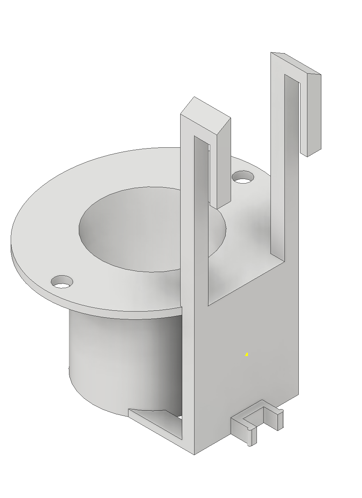

When working on a project in a class called Computerized hardware, we needed a bracket to hold a small motor. It needed to hang from a bottle holder that had been made earlier shown below.
Obviously it needed to be fastened somehow so I desided to make a small clip that go into the slot in the bottle holder. It also needed to have holes to fasten the motor in place. So here is how I designed it.

--
Then I opened the file in Cura to prepare it for printing. I used
this
video to help me with the settings in Cura.
Since I hadn't planned on using this object as the object for this assignment, I didn't document the process in Cura. But then COVID-19 happened and FabLab closed I couldn't do what I had planned. And because I made the Cura file in FabLab Reykjavík I do not have the file in my computer.
Here is the the final outcome.
It turned out great. The small clip fit perfectly in the slot in the bottle holder. The fastening holes for the motor were however the only issue, so only one could be used as the didn't align correctly. But it didn't matter in the end.
Here
you can download the stl file of the bracket.